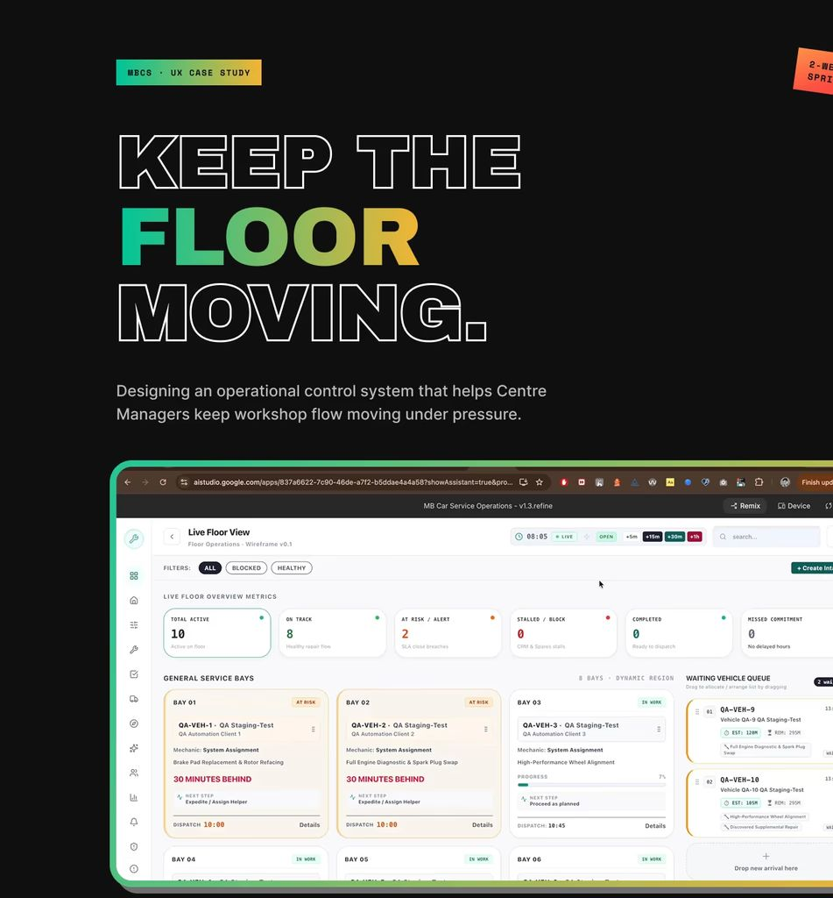

01
MBCS
Multi-Bay Car Service Centre · My Best Work

- Role
- UI/UX Designer — sole designer
- Duration
- 4-week sprint
- Platform
- Enterprise SaaS · Desktop
- Industry
- Automotive After-Sales
- Team
- Solo — with stakeholders, workshop managers & AI-assisted prototyping
- Goal
- Reduce workshop delays by improving real-time operational visibility
- Tools
- ChatGPT (Strategist), AI Studio (Mechanic), Claude (Engineer), GitHub (Garage). Four AI tools, one job each. I made every decision.
- Status
- Concept case study
Problem
The service centre lacks a unified operational view that enables managers to monitor workflow, identify bottlenecks, and prioritize work effectively. This lack of visibility results in blocked bays, delayed decisions, missed pickup commitments, and reduced workshop throughput.
What I did
Business understanding → Research → Journey mapping → Decision mapping → IA → Wireframes → Workflow design → Interaction design → Design system → High fidelity prototype
Key decision
- How I reframed the product when every system said "track jobs"Why it matteredI spent the first week designing the wrong product.The decisionThat's when I changed my approach. I stopped designing around the job and started designing around the flow of work across the floor. A job marked "in progress" tells you nothing. What matters is whether work is moving, where it's stuck, and what that's about to cost. Every later decision comes back to this one.ResultFrom that point on, it wasn't "another tracking screen." It was a tool for controlling flow. The biggest decision of the project happened before I'd designed a single final screen — deciding what the product was actually for.
Design targets
Before the board vs the targets it was built to hit.
Blocked-bay time42 min → 12 min
On-time pickup74% → 95%
Spot a bottleneck15 min → <1 min
Allocation3 min → 30 sec
Outcome & learning
I started by designing pages. I ended up designing decisions. That shift changed how I approach product design. I design around operational problems first, then the flow, then the screens.